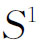
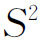
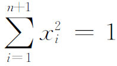
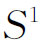
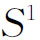
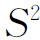
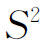
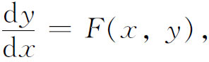
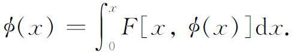
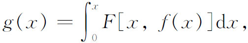

6．不动点定理
组合的方法，除了服务于判别复形之外，还产生了不动点定理（fixed point theorems）。这些定理有重大的几何意义，又在分析学中有应用。布劳威尔通过引进从一个复形到另一个的映射类(41)和一个映射的映射度(42)这些概念（这里不详说），能够第一次处理所谓一个流形上的向量场的奇点。考虑圆周

、球面
和n＋1维欧几里得空间中的n维球
。在
上，能够在每一点处都取一个切向量，使得这些向量的长和方向绕着这圆周连续地变，而无一个向量的长是零。我们把这说成
上有一个无奇点的连续向量场。但是，
上不存在这样的一个场。布劳威尔证明了(43)
上出现的情形必也出现在每一个偶数维的球上；即偶维球上的连续向量场必定至少有一个奇点。复形到复形的连续变换理论跟奇点理论有密切关系。特别有兴趣的是在这种变换下的不动点（fixed point）。如果用f（x）表示一点x在这种变换下的像点，那么一个不动点就是满足f（x）＝x的点。可以在任一点x处，引进从x到f（x）的一个向量。在一不动点处，这向量不确定，这个点是一个奇点。关于不动点的基本定理是布劳威尔的(44)。这定理适用于n维单形（或它的同胚像），定理说，n维单形到它自己的连续变换至少有一个不动点。例如，一个圆盘到自己的连续变换至少有一个不动点。在同一篇论文里布劳威尔还证明了偶维球到它自己的每一个一一的连续变换，如果能形变为恒同变换，它就至少有一个不动点。
庞加莱在1912年逝世前不久，还论证了(45)如果某拓扑定理成立，有限制的三体问题中将会存在周期轨道。这个拓扑定理说的是，如果两个圆之间的平环到自己的一个拓扑变换，把每一个圆变成自己，把一个圆沿着一个方向转动，而把另一个圆沿着相反的方向转动，同时保持面积不变，那么在平环里至少存在两个不动点。庞加莱的这个“最后定理”是伯克霍夫证明的(46)。
伯克霍夫和凯洛格（Oliver D．Kellogg）在他们合写的一篇论文里(47)，把不动点定理推广到了无穷维的函数空间，绍德尔（Jules P．Schauder，1899—1943）在一篇文章里(48)，以及绍德尔和勒雷（Jean Leray，1906—1998）在合写的一篇论文里(49)，应用不动点定理来证明微分方程的解的存在。这些应用所运用的一个关键定理是：如果T是巴拿赫空间中一个闭的、凸的紧致集到这集自身的一个连续映射，那么T有一个不动点。
如何运用不动点定理来证明微分方程的解的存在，最好是从一个颇为简单的例子来理解。考虑区间0≤x≤1上的微分方程

初始条件是x＝0处y＝0。解φ（x）显然满足方程

我们引进一般的变换

这里的f（x）是一个任意函数。这个变换把f联系到g，并且能证明它在由［0，1］上的连续函数所形成的空间中是连续的。我们所寻找的解φ便是这个函数空间的一个不动点。如果我们能证明这函数空间满足使一条不动点定理成立的条件，那么φ的存在就证明了。这恰恰是适用于函数空间的那些不动点定理所做的事。这个简单的例子所说明的方法，还使我们能证明非线性的偏微分方程的解的存在，这些方程在变分学和流体动力学里是常见的。